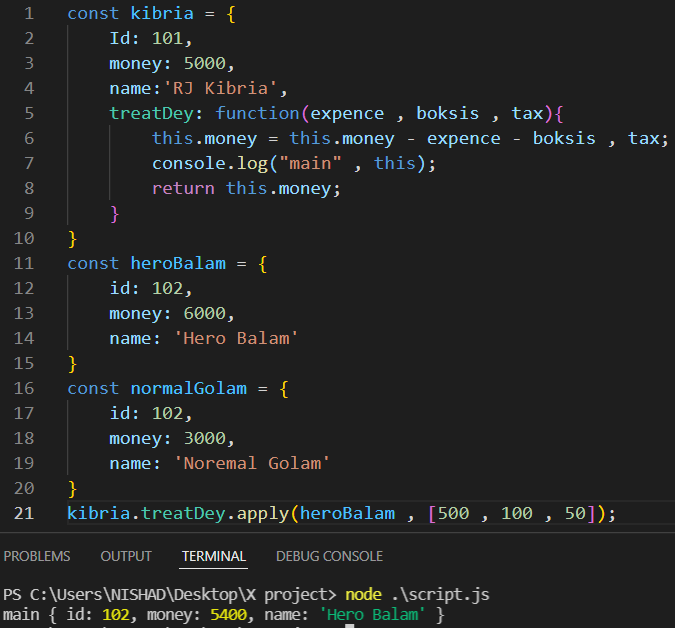

______ call ______
bind দিয়ে call করতে হলে আগে bind expression কে একটা variable এর মধ্যে store করতে হতো ,
তারপর সেটাকে আলাদা করে call করে তারমধ্যে parameter দিতে হত ।
কিন্তু bind এর পরিবর্তে call expression ব্যেবহার করলে কোন variable এর মধ্যে store করা লাগেনা ,
এক লাইনেই expression + call + parameter set সব করা যায়
এবং muiltiple parameter set করা যায় ।
______ apply ______
call এর সাথে apply 90% same শুধু মাত্র এক যায়গায় একটু তফাৎ আছে সেটা হল ,
parameter গুলাকে একটা array এর মধ্যে করে পাঠাতে হয় ।
